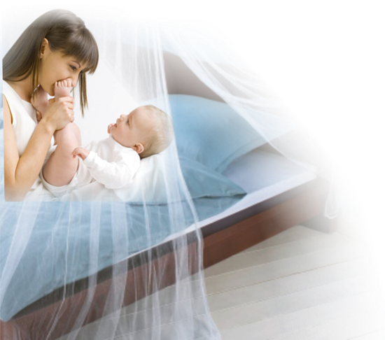
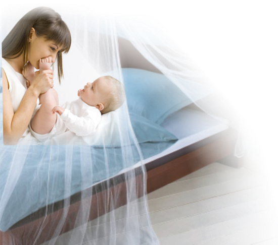
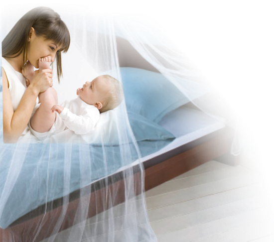
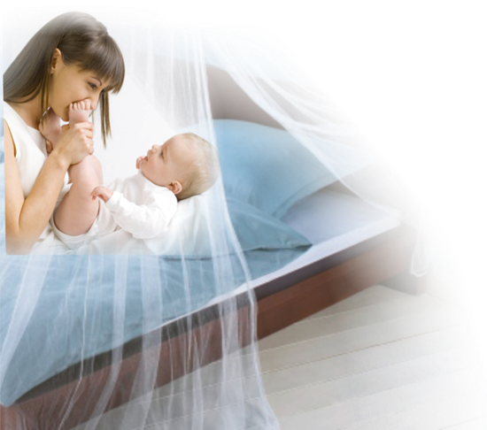

Email:
Enter brief problem description:

 Log Out

Log Out

Email:
Enter brief problem description:
The following buttons are used to Navigate through the course content:
 The Menu button calls the Course Menu, from which you can navigate to each module and unit. The menu also shows which modules and units have been completed.
The Menu button calls the Course Menu, from which you can navigate to each module and unit. The menu also shows which modules and units have been completed.
 The Next button moves you to the next page within a Unit.
The Next button moves you to the next page within a Unit.
The Previous button moves you back one slide.
The Home button allows you to return to the welcome screen of the course or the first page of the current unit.
The Help button will display this screen.
The Logout button will log you out and take you to the login screen.
You can also use the navigation menu at the bottom of the screen to skip to different slides within a unit.
To visit the more detailed help section, including help with colour settings and using the virtual microscope, click here.
For issues with using this software, you can contact the focal person who distributed the pilot course for the fastest response. You may also email MalariaMicroscopyCourse@gmail.com with any questions or feedback.